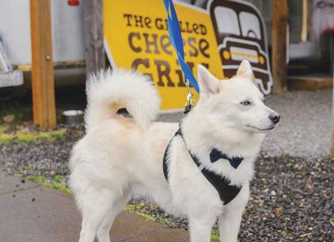

- Главная /
- Жизнь в США /
- Во сколько обходится содержание домашних животных в Америке
Во сколько обходится содержание домашних животных в Америке
Эту статью про содержание домашних животных в США мы посвятили тем, кто еще не решился пока завести питомца дома. Америка – страна, где работают четкие правила и законы и вместе с тем – ответственность. Чтобы не попасть под нарушения, штрафы и административную ответственность, каждый будущий владелец должен представлять себе, во сколько обойдется содержание животного.
Любопытно то, как американцы называют приобретение домашнего животного. В России мы привыкли говорить: «купил/завел кошку/собаку». В США используют слово adopted (усыновил), что уже говорит о том, что животное в американском доме – полноценный член семьи.
По данным American Society for the Prevention of Cruelty to Animals (ASPCA), затраты на содержание домашнего питомца в первый год превышают $1000. Рассказываем – почему так.
Любопытно то, как американцы называют приобретение домашнего животного. В России мы привыкли говорить: «купил/завел кошку/собаку». В США используют слово adopted (усыновил), что уже говорит о том, что животное в американском доме – полноценный член семьи.
По данным American Society for the Prevention of Cruelty to Animals (ASPCA), затраты на содержание домашнего питомца в первый год превышают $1000. Рассказываем – почему так.

Расходы при усыновлении домашнего любимца
- Стоимость усыновления: собака: от 0 до $660 долларов, кошка: от 0 до $270.
Некоторые породы могут стоить тысячи долларов. Однако в США много приютов для животных, где можно совершенно бесплатно взять любимца или сделать пожертвование в приют на их содержание.
- Еда: $30-$50 для собаки, $100-$200 для кошки.
- Бытовые принадлежности (миски, место для сна, поводки, игрушки и пр.): от $ 50 до $300.
- Ветеринар и первые прививки: собака: от $50 до $300 долларов, кошка: от $100 до $200.
- Профилактическая медицина: $50-$100.
- Стерилизация или кастрация: от $20 до $300.
- Лицензирование: собака: от $10 до $20, кошка: от 0 до $20.
- Микрочип: $50.
Таким образом, первичные затраты на усыновление собаки обойдутся в интервале от $260 до $1800, а на кота – от $260 до $1500.
Ежегодные расходы на домашних животных
- Еда: $250-$750 для собак, $ 100-$200 для кошек
- Ежегодные медицинские осмотры: $50-$100
- Прививки: от $10 до $100 долларов
- Профилактическая медицина: $50-$100
- Помет: $200-$250
- Игрушки и прочие принадлежности: $20-$100.
- Лицензия: от 0 до $20.
Общая годовая стоимость содержания собаки: от $380 до $1170, кошки - от $430 до $870.
Расходы на приемы у ветеринаров, профилактические осмотры и прививки будут различаться в зависимости от того, есть ли у вас страховка для домашних животных. Если питомец серьезно заболел или попал в аварию, ветеринар быстро выставит счет. Именно здесь страхование домашних животных является необходимой статьей расходов, чтобы покрыть расходы на неотложные визиты к ветеринару и лечение.
В ситуации, когда пропал щенок, полис страхования домашних животных может покрыть все расходы, включая вознаграждение за его нахождение. Некоторые полисы также покрывают судебные издержки, если питомец попадет в юридическую ловушку (например, укусит соседа, который в конечном итоге подаст в суд), что потребует найма адвоката.
Средняя годовая стоимость страховки домашних животных составляет $225 для собак и $175 для кошек. Несмотря на то, что страхование домашних животных в некоторых штатах не является обязательным, покупка плана страхования домашних любимцев может помочь сэкономить тысячи долларов на счетах ветеринара. Кроме того, чем раньше приобрести страховку на домашнее животное, тем дешевле она обойдется. «Родители» взрослых кошек и собак часто сталкиваются с такой проблемой: пока животное было молодым и здоровым, на страховке экономили, а когда из-за возраста потребовались частые визиты к ветеринару и специальные процедуры, страховые компании отказывают в плане по той же причине – слишком взрослое животное.
К расходам на животное относится услуги отелей/передержки для питомцев. Например, на случай командировки и невозможности поручить уход знакомым и друзьям. Кроме того, дополнительные деньги придется заплатить собственнику жилья в случае аренды или сообществу домовладельцев, если это правило прописано в уставе. Поэтому обращайте внимание при покупке или аренде квартиры, разрешается ли в том или ином доме держать домашних животных и нужно ли это оплачивать дополнительно. В США даже в собственной квартире это может быть запрещено, если прописано в уставе или правилах дома. Исключение составляют специально обученные домашние животные, помогающие своим хозяевам с ограниченными возможностями.
В ситуации, когда пропал щенок, полис страхования домашних животных может покрыть все расходы, включая вознаграждение за его нахождение. Некоторые полисы также покрывают судебные издержки, если питомец попадет в юридическую ловушку (например, укусит соседа, который в конечном итоге подаст в суд), что потребует найма адвоката.
Средняя годовая стоимость страховки домашних животных составляет $225 для собак и $175 для кошек. Несмотря на то, что страхование домашних животных в некоторых штатах не является обязательным, покупка плана страхования домашних любимцев может помочь сэкономить тысячи долларов на счетах ветеринара. Кроме того, чем раньше приобрести страховку на домашнее животное, тем дешевле она обойдется. «Родители» взрослых кошек и собак часто сталкиваются с такой проблемой: пока животное было молодым и здоровым, на страховке экономили, а когда из-за возраста потребовались частые визиты к ветеринару и специальные процедуры, страховые компании отказывают в плане по той же причине – слишком взрослое животное.
К расходам на животное относится услуги отелей/передержки для питомцев. Например, на случай командировки и невозможности поручить уход знакомым и друзьям. Кроме того, дополнительные деньги придется заплатить собственнику жилья в случае аренды или сообществу домовладельцев, если это правило прописано в уставе. Поэтому обращайте внимание при покупке или аренде квартиры, разрешается ли в том или ином доме держать домашних животных и нужно ли это оплачивать дополнительно. В США даже в собственной квартире это может быть запрещено, если прописано в уставе или правилах дома. Исключение составляют специально обученные домашние животные, помогающие своим хозяевам с ограниченными возможностями.
Как сэкономить на содержании питомцев в Америке?
Подписка на доставку корма и других товаров для животных. Крупные сети товаров для животных предлагаю своим клиентам скидку в 25-30% при подписке. Владельцам не нужно помнить о том, когда нужно купить корм или наполнитель для туалета. Компания будет доставлять необходимые товары с выбранной периодичностью.
Домашние лакомства. Как и упакованная еда для людей, лакомства для животных могут содержать консерванты, ненужные жиры и калории. В Интернете можно найти рецепты правильного питания для домашних животных.
Дежурство. Американцы стараются поддерживать отношения с другими владельцами домашних животных. Так в случае командировки или непредвиденного совещания на работе, кто-то мог бы погулять с собакой, покормить ее. К знакомым доверия больше, а экономия на услугах по выгулу собак – на лицо.
Ветеринарные школы. В ветеринарных школах можно всегда получить профессиональную помощь бесплатно или по низкой цене. Студентам нужно больше практики, поэтому они под руководством профессионалов могут выполнять ряд процедур. Кроме того, университетские клиники часто имеют доступ к новым методам лечения и технологиям.
«Пушистая» статья расходов. Жители США, прежде чем завести домашнего любимца, просчитывают, «потянут» ли новую статью расходов.
Домашние лакомства. Как и упакованная еда для людей, лакомства для животных могут содержать консерванты, ненужные жиры и калории. В Интернете можно найти рецепты правильного питания для домашних животных.
Дежурство. Американцы стараются поддерживать отношения с другими владельцами домашних животных. Так в случае командировки или непредвиденного совещания на работе, кто-то мог бы погулять с собакой, покормить ее. К знакомым доверия больше, а экономия на услугах по выгулу собак – на лицо.
Ветеринарные школы. В ветеринарных школах можно всегда получить профессиональную помощь бесплатно или по низкой цене. Студентам нужно больше практики, поэтому они под руководством профессионалов могут выполнять ряд процедур. Кроме того, университетские клиники часто имеют доступ к новым методам лечения и технологиям.
«Пушистая» статья расходов. Жители США, прежде чем завести домашнего любимца, просчитывают, «потянут» ли новую статью расходов.
Как определить, можно ли себе позволить завести домашнее животное в США?
- 1. Выясните, как ежемесячные расходы повлияют на семейный бюджет. С учетом непредвиденных расходов и обязательных трат, нужно быть готовым потратить еще несколько сотен долларов в месяц дополнительно. Хотя, как показывает практика, содержание кошек может обходиться не более, чем в $20 в месяц, а собак – в пределах $50, не считая страховки.
- 2. Отложите от $1000 до $2000 на непредвиденный счет ветеринара. Конечно, можно придерживаться принципа «Со мной этого никогда не случится». Но лучше быть готовым к любым ситуациям.
- 3. Подумайте, как вы будете себя чувствовать, если вам выставят жизненно важный счет за услуги ветеринара, который вы не сможете себе позволить.
Как сэкономить на содержании питомцев в Америке?
Подписка на доставку корма
и других товаров для животных. Крупные сети товаров для животных предлагаю своим клиентам скидку в 25-30% при подписке. Владельцам не нужно помнить о том, когда нужно купить корм или наполнитель для туалета. Компания будет доставлять необходимые товары с выбранной периодичностью.
Домашние лакомства . Как и упакованная еда для людей, лакомства для животных могут содержать консерванты, ненужные жиры и калории. В Интернете можно найти рецепты правильного питания для домашних животных.
Дежурство . Американцы стараются поддерживать отношения с другими владельцами домашних животных. Так в случае командировки или непредвиденного совещания на работе, кто-то мог бы погулять с собакой, покормить ее. К знакомым доверия больше, а экономия на услугах по выгулу собак – на лицо.
Ветеринарные школы. В ветеринарных школах можно всегда получить профессиональную помощь бесплатно или по низкой цене. Студентам нужно больше практики, поэтому они под руководством профессионалов могут выполнять ряд процедур. Кроме того, университетские клиники часто имеют доступ к новым методам лечения и технологиям.
«Пушистая» статья расходов. Жители США, прежде чем завести домашнего любимца, просчитывают, «потянут» ли новую статью расходов.
Домашние лакомства . Как и упакованная еда для людей, лакомства для животных могут содержать консерванты, ненужные жиры и калории. В Интернете можно найти рецепты правильного питания для домашних животных.
Дежурство . Американцы стараются поддерживать отношения с другими владельцами домашних животных. Так в случае командировки или непредвиденного совещания на работе, кто-то мог бы погулять с собакой, покормить ее. К знакомым доверия больше, а экономия на услугах по выгулу собак – на лицо.
Ветеринарные школы. В ветеринарных школах можно всегда получить профессиональную помощь бесплатно или по низкой цене. Студентам нужно больше практики, поэтому они под руководством профессионалов могут выполнять ряд процедур. Кроме того, университетские клиники часто имеют доступ к новым методам лечения и технологиям.
«Пушистая» статья расходов. Жители США, прежде чем завести домашнего любимца, просчитывают, «потянут» ли новую статью расходов.